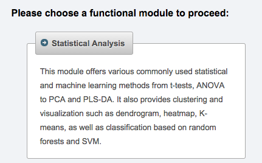

This module exports the contents of the peak list into a CSV (Comma-Separated Values) file formatted for easy upload into the Statistical Analysis module of the MetaboAnalyst service. Prior to export, samples must be separated into groups by a user-defined parameter (see Project/Set sample parameters menu). Each group must contain at least 3 samples (raw data files).
The exported file is formatted as shown below. Each peak is represented by its ID in the peak list, m/z value (formatted according to MZmine configuration), retention time value (formatted according to MZmine configuration), and the preferred identity (name).
"Sample","ko15","ko16","ko18","ko19","ko21","ko22","wt15","wt16","wt18","wt19","wt21","wt22" "Label","KO","KO","KO","KO","KO","KO","WT","WT","WT","WT","WT","WT" "1:258.110@13.4 (name1)",147887.53,451600.71,65290.38,56540.93,85146.33,162012.44,175177.08,82619.48,51951.61,69198.22,153273.47,98144.28 "2:137.045@9.4 (name2)",1778569,1567038,1482796,1039130,1223132,1072038,1950287,1466781,1572679,1275313,1356014,1231442 "4:184.0733@13.7 (name4",237993.6,269714,201393.4,150107.3,176989.7,156797,276541.8,222366.2,211717.7,186850.9,188285.9,172348.8 ...
In MetaboAnalyst, please select the Statistical Analysis module.

After selecting the Statistical Analysis module, please set the parameters as shown below. In the "Data File" field, please select the CSV file generated by this MZmine module.

For details about MetaboAnalyst functions and capabilities, please refer to its documentation.